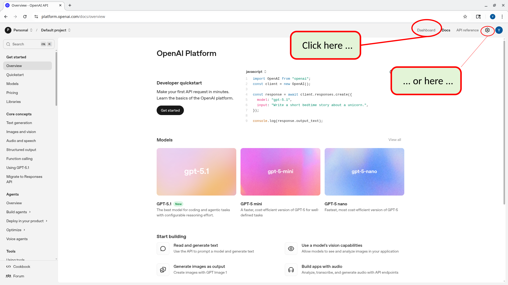

23 19. Step 7: Set Up OpenAI API
Click here https://platform.openai.com/docs/quickstart for the OpenAI official quickstart guide.
See below for step by step instructions.
23.1 Create OpenAI Account
Go to the OpenAI Platform: https://platform.openai.com/
Sign up or log in to your account.
Open the Dashboard (or click on the gear for settings) 
{kind=link}
23.2 Create a “project” (optional)
All OpenAI API keys are associated with a “project”. You automatically have one “Default Project”. However, it can be helpful to create a new OpenAI “project” for every website or other product you are creating.
OpenAI “projects” allow for more control as to how your API Keys are used.
When you use a “project” …
you can have several people in your team share the API Key
you can set more fine grained permissions as to how the project can use the key
See here for more info about Open AI projects: https://help.openai.com/en/articles/9186755-managing-projects-in-the-api-platform
To create a project, do the following:
{kind=link}
23.2.2 Select “projects”
{kind=link}
23.2.3 Click “create”
{kind=link}
23.2.4 Give your project a name
{kind=link}
23.3 Create API keys
23.3.1 Click API Keys
{kind=link}
23.3.2 Click Create new secret key.
{kind=link}
23.3.3 Key Owner - “YOU” or a “SERVICE ACCOUNT”
When creating the key you need to specify whether the key is owned by “you” or by a “service account”. See more explanation below.
{kind=link}
{kind=link}
API Keys that are owned directly by “you” are useful when you are performing experiments with AI or just getting to understand how things work. In addition some 3rd part websites ask you to upload an OpenAI API key so that the work that they do for you is billed to YOUR OpenAI API key - i.e. the service doesn’t pay for the AI processing it does on your behalf, you do. It makes sense for these types of keys to be owned by “You”.
However, when creating software products that use API Keys it’s recommended to create a “Service Account” for that product and have the key be owned by that service account. The use of the key can then be tracked to your product’s “service account”.
Setting permissions for keys owned by “You”
If you create a key that is owned by “You” (see above) then you are given the opportunity to set permissions that govern what is and what isn’t allowed to be done with the key. This is especially important if you are going to be using your API Key to access 3rd party services. You can restrict the API Key to only allow some features to ensure that the 3rd party service doesn’t abuse the use of the key (as use of the API key would be charged to you).
If you create a key that is owned by a “Service Account” (as recommended for this project) then you can set permissions
Setting permissions for keys owned by a “Service Account”
By contrast, the permissions for a key that is owned by a “Service Account” are governed by the service account’s “role”. To change what the key can do, you must change the service account’s roles/permissions, not the key. We’ll see below (after saving the key) how to modify the permissions for such a key.
23.3.4 Copy the key immediately — you won’t be able to see it again.
When you click “create secret key” (see above) you will be shown the actual key. Copy the key immediately and save it — you won’t be able to see it again.
The key should be treated in the same way as a password. (In the following screenshot the API Key is purposely obscured). It is secret information which should never be divulged to anyone outside of your organization. Even within your organization, only people who have a “need to know” should be given access to the actual key value. Therefore do NOT commit this to git because git repos are often shared with people who should not have access to this type of info.
{kind=link}
In the next section we will explain how to store this API Key in the supabase/.env file. This is because the communication with OpenAI will be done via a Supabase Edge Function. Much of the other “secret” information that we will be using in this tutorial will also be stored in .env files (see the section above that describes more about .env files).
For now, I recommend that for the purposes of this tutorial, you also store all of the secret info in a Word document (or similar). This is NOT the recommended approach for actual software development projects. However, as you are learning it can be helpful to have one file that stores all of the “secret information” in one place. You can store notes and screenshots in this file that help you remember where you got the information (e.g. OpenAI) and what it will be used for.
23.4 Setting permissions for keys owned by a “Service Account”
How to adjust permissions:
Go to Organization → Admin keys / Service accounts.
Select the service account.
Modify its assigned roles/permissions.
All keys for that service account will now reflect those updated permissions.
If you’d like, I can outline how to set up a more restrictive service account.
23.4.1 Store as Supabase Secret
You’ll configure your Edge Functions to read OPENAI_API_KEY from the Supabase environment.
Install Supabase CLI (if you haven’t already)
(see the chapter above about the Supabase CLI)
Link your local project to your Supabase project (if you haven’t already)
(see the chapter above about the Supabase CLI)
Run the following command to set the secret in Supabase, where “your-openai-key” is the tet of the key that you just got from openai
supabase secrets set OPENAI_API_KEY=your-openai-keyConfirm that the key was set:
You can run the following command to confirm that there is an OPENAI_API_KEY set to some value. However, the “DIGEST” that is shown here is NOT the actual key. This is done for security reasons. You can delete the key and reset it but you cannot see the actual value for the key.
npx supabase secrets listNAME | DIGEST ----------------|------------------------------------------------------------------ OPENAI_API_KEY | 661627b246146bfd00805f19997db43c066fba3002fabe2ed6a9922c8db29f87You can also use the supabase website dashboard (Project Settings → API → Secrets) to see the same info.